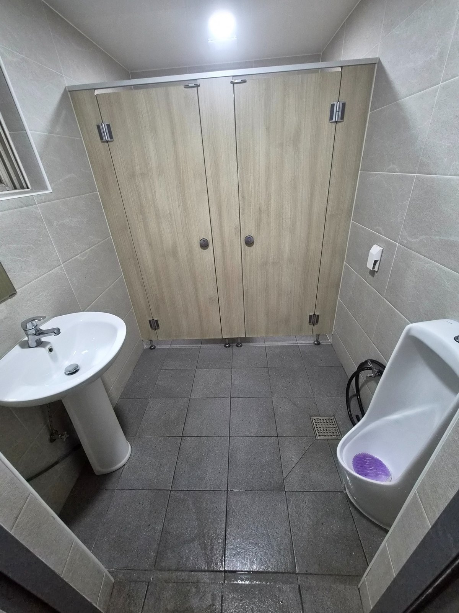
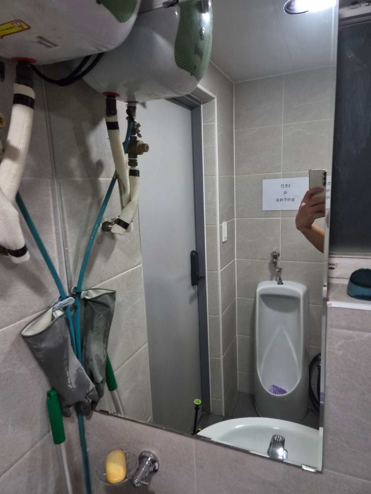
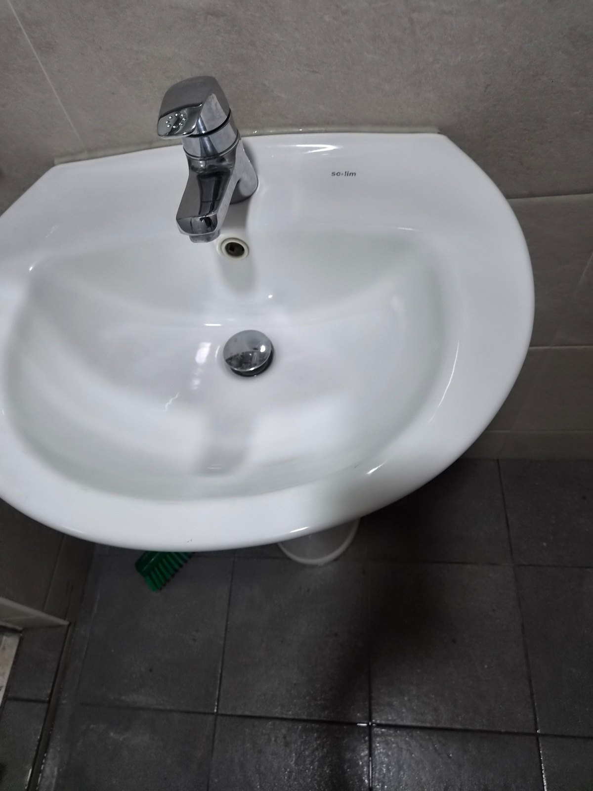
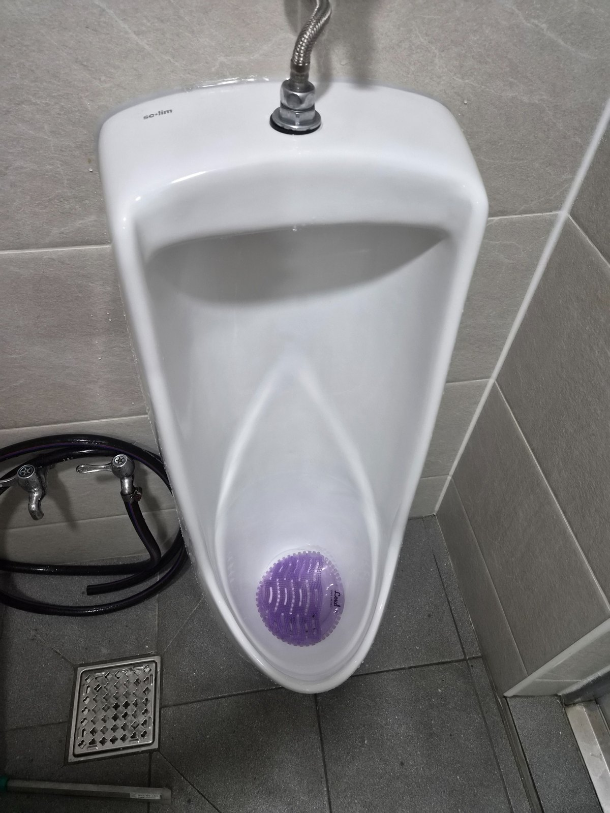
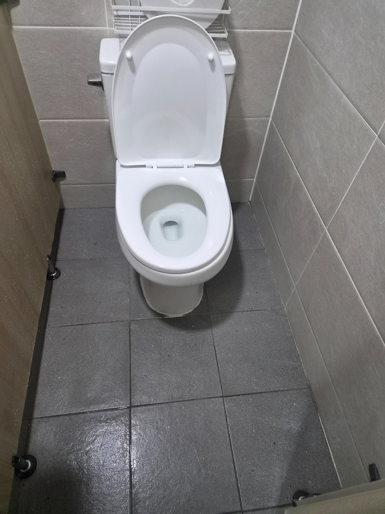
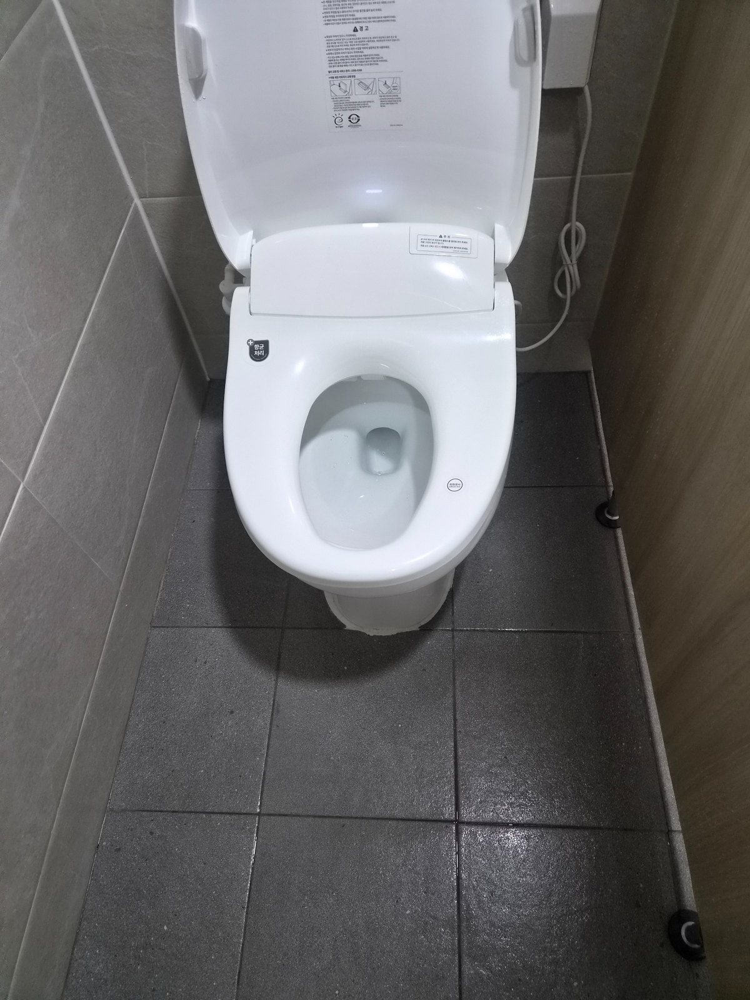

공장과 산업단지 사업장의 화장실은 직원 이용이 반복되기 때문에 눈에 보이는 부분만 닦는 관리보다 바닥, 세면대, 소변기, 변기 주변까지 일정한 주기로 관리하는 것이 중요합니다. 이번 페이지는 밝은 회색 타일과 칸막이 구조의 화장실 사진을 중심으로 김해 공단 화장실 정기청소 관리 범위를 정리했습니다.

사업장 화장실은 바닥과 위생기구를 함께 관리합니다
화장실 입구부터 바닥 전체, 세면대, 수전, 소변기와 변기 주변을 순서대로 확인합니다. 특히 바닥은 물기와 사용 흔적이 반복적으로 남는 공간이기 때문에 배수구 주변과 칸막이 아래쪽까지 함께 관리해야 전체적인 청결도가 유지됩니다.


세면대와 소변기는 사용 흔적이 빠르게 쌓이는 곳입니다
세면대는 물때와 비누 자국이 쉽게 남고, 소변기는 사용량이 많을수록 냄새 관리가 중요해집니다. 표면 상태와 오염 정도에 맞춰 세정하고, 주변 바닥까지 함께 정리해 사용자가 체감하는 청결도를 높입니다.


김해 공단 정기청소는 현장 이용량에 맞춰 상담합니다
퍼펙트케어는 김해 주촌, 진례, 한림, 대동 등 공장과 사업장이 밀집한 지역의 정기청소 상담이 가능합니다. 주 1회부터 주 6회까지 사업장 규모, 직원 수, 방문객 수, 화장실 이용량, 운영시간, 바닥 오염 정도와 관리 범위를 확인해 맞춤 관리 방향을 안내합니다.

김해 공단·산업단지 사업장 청소 상담
김해 주촌·진례·한림·대동 등 공장과 사무실이 밀집한 지역을 포함해 화장실 정기청소 상담이 가능합니다. 현장 규모, 직원 수, 방문객 수, 화장실 이용량, 운영시간, 바닥 오염 정도와 관리 범위를 확인한 뒤 무료 방문견적으로 안내합니다.